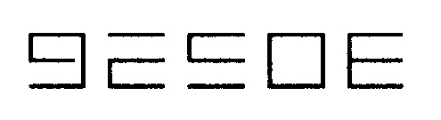

Auf der Suche nach der 64’er
Steuern Sie einen Roboter durch ein Labyrinth, in dem sehr viele Gefahren lauern. Das Besondere: Das Spielfeld (16 Bildschirmseiten) können Sie selbst erstellen.
Der Spieleautor über die Entstehungsgeschichte von »Roboservant«: »Ich hatte schon lange den Drang, ein Spiel für die 64’er zu schreiben. Natürlich handelt auch das Spiel davon, oder vielmehr von Chefredakteur Michael Pauly. So dachte ich mir, daß es nicht schlecht wäre, wenn er sich die 64’er selbst, mit Hilfe eines Roboters holen würde. Daraus ergab sich die Spielgeschichte«.
Man steuert mit dem Joystick einen Roboter (elektronischen Sklaven), der die Aufgabe hat, zum Chefredakteur zu gehen und sich seinen Auftrag zu holen. Der Auftrag: Die soeben gedruckte 64’er ist für den Chef zu besorgen. Eine gefährliche Aufgabe, wie sich schnell herausstellt. Viele Gefahren lauern und viele Abenteuer sind zu bestehen oder besser, zu überstehen.
Das Ziel des Spiels ist, möglichst schnell die neue Ausgabe beizubringen. Die schnellsten Zeiten werden in die High-Score-Liste aufgenommen.
Konstruieren Sie sich Ihren eigenen Level
Wird Ihnen das Spiel langweilig, erstellen Sie sich doch einfach ein neues Spielfeld. Sie können bis zu 16 Bildschirmseiten, der Länge nach, aneinanderreihen. Beim Spiel werden die verschiedenen Seiten über den Bildschirm gescrollt. Es wird also nicht plötzlich eine neue Bildschirmseite gezeigt, sondern langsam und stufenlos von links oder rechts ins Bild geschoben.
Tips zum Eintippen und zur Benutzung
Das Maschinenprogramm geben Sie am besten mit dem MSE ein. Beachten Sie dabei bitte, daß das Programm unbedingt den Namen »ROBOSERVANT« hat. Den Basic-Teil sollten Sie mit dem Checksummer aus dieser Ausgabe eingeben und unter dem Namen »BASIC« abspeichern. Der Basic-Teil wird nämlich vom Maschinenprogramm nachgeladen. Das Maschinenprogramm besitzt eine Basic-Zeile und kann deshalb mit LOAD"ROBOSERVANT",8 geladen und mit RUN gestartet werden. Auf dem Bildschirm erscheint dann die Meldung »Now Loading Part 2«.
Ist das Programm »BASIC« geladen, können Sie in einem Menü die folgenden Punkte auswählen:
1 PLAY — Das Programm kann gespielt werden. Schließen Sie dazu einen Joystick am Control-Port 2 an.
2 EDIT — Hier können Sie ein eigenes Spielfeld erstellen und speichern.
3 LOAD — Laden eines selbsterstellten Spielfeldes.
4 HIGHSCORES — Die Highscore-Liste wird gezeigt. Mit einem Tastendruck kommen Sie wieder ins Hauptmenü zurück. Sollten Sie besser als die Autoren spielen, werden Sie im Highscore verewigt. Dazu wird auf Diskette ein File namens »HS« angelegt.
5 END — Das Programm wird beendet.
Nun zur Tastenbelegung im Editmodus:
R — Zeichen auswählen, rückwärts
F — Zeichen auswählen, vorwärts
S — Zeichen setzen
L — Spielfeld löschen
A — Spielfeld SAVEn. Als Namen müssen Sie eine Zahl oder einen Buchstaben angeben.
X — Zurück zum Menü
Zum Editieren des Spielfeldes stehen verschiedene Zeichen bereit, die sich vom Aussehen und der Funktion unterscheiden. Die Zeichen und ihre Funktion sind in Tabelle 1 zusammengefaßt.
(Robert Brandl/Thomas Schmidt / hm)| Zeichen | Bedeutung |
|  | Backsteine: der Roboter kann auf diesen Zeichen stehen, gehen und hüpfen. = Springknopf: wenn man auf dieses Zeichen |
 |
kommt, springt er ein paar Zeichen hoch. Wenn man auf keinem Zeichen zum Stehen kommt, ist der Roboter nach dem Landen schrottreif. Man kann aber während des Springens den Joystick nach links oder rechts bewegen. Dadurch kann man ein Zeichen nach rechts oder links gehen. |
| Zauberstein: der Roboter kann solange auf diesem Zeichen stehen bis das Zeichen verschwindet. Wenn dann der Roboter mehr als zwei Zeichen tiefer fällt, geht er kaputt. | |
| Fließband: der Roboter wird nach links oder rechts befördert. | |
 |
Strauch: der Strauch ist für den Roboter nur dann gefährlich wenn er ihn mit den Ketten (dem unteren Teil des Roboters) berührt. |
| Faß: das Faß ist für Ketten und Kopf gefährlich. Es darf also nicht berührt werden. | |
| Steinzapfen: die Zapfen dürfen ebenfalls nicht berührt werden. | |
| Spiralleiter: der Roboter wird hinauftransportiert. | |
| Sperrstein: der Stein wird dazu benutzt um dem Roboter den Weg nach links oder rechts zu versperren (z.B. als Endwand am rechten und linken Ende des Spielfelds). Man kann aber auch darauf stehen und laufen. |
| Maschinenroutinenbelegung | |
|---|---|
| $C800 | Musikprogramm mit Daten |
| $C000 | Scrollroutine und Bewegung der Sprites |
| $C180 | Löschroutine |
| $C1A0 | Saveroutine |
| $C2C6 | Interrupt, Zeichenbewegung und Musiksteuerung |
| $C400 | Hauptprogramm für das Spiel |
| Um das Programm zu starten, muß man den ersten Teil laden und mit RUN starten. Das Programm lädt den zweiten Teil automatisch nach. | |